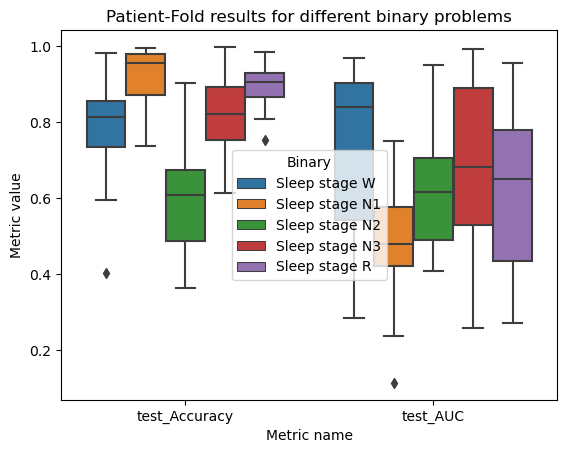
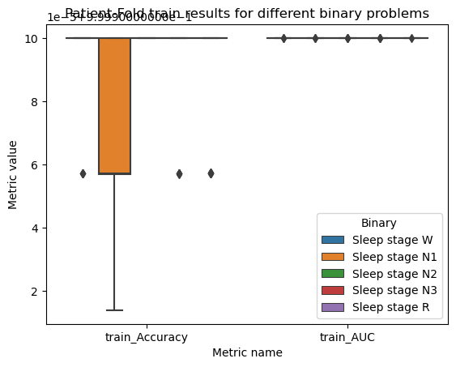

import numpy as np
import pandas as pd
import matplotlib.pyplot as plt
import seaborn as sns
from rich.progress import track
import yasa
import mne
from sklearn.model_selection import train_test_split, cross_validate, GroupKFold
from sklearn.ensemble import RandomForestClassifier
from sklearn import metrics
from sleepstagingidal.data import *
from sleepstagingidal.dataa import *
from sleepstagingidal.feature_extraction import *
from sleepstagingidal.cross_validation import *[All] Pre-extracted basic features
Quick experiment trying to set different binary problems using pre-extracted features.
In this quick experiment we are going to utilize the pre-extracted features to perform different binary classification problems: We’re going to try every possible binary problem to assess the difference in performance between them. Later we will jump into using an ensemble of binary classificators to predict all the classes.
Load and filter the data
The first thing we have to do is loading the features we have previously extracted:
df = pd.read_csv(path_data, index_col=0)
df.head()| 0 | 1 | 2 | 3 | 4 | 5 | 6 | 7 | 8 | 9 | ... | 76 | 77 | 78 | 79 | 80 | 81 | 82 | 83 | Label | Patient | |
|---|---|---|---|---|---|---|---|---|---|---|---|---|---|---|---|---|---|---|---|---|---|
| 0 | 0.495066 | 0.112756 | 0.112814 | 0.064382 | 0.165632 | 0.049350 | 0.362000 | 0.116360 | 0.171950 | 0.159524 | ... | 0.064126 | 0.025867 | 0.687305 | 0.084597 | 0.083275 | 0.047782 | 0.070681 | 0.026361 | Sleep stage W | PSG29.edf |
| 1 | 0.465074 | 0.117853 | 0.177654 | 0.101286 | 0.104765 | 0.033368 | 0.347451 | 0.205411 | 0.208832 | 0.093656 | ... | 0.050156 | 0.026275 | 0.811640 | 0.054457 | 0.050954 | 0.026253 | 0.037776 | 0.018920 | Sleep stage W | PSG29.edf |
| 2 | 0.493321 | 0.083727 | 0.160615 | 0.093394 | 0.127338 | 0.041605 | 0.509627 | 0.099740 | 0.174744 | 0.106081 | ... | 0.057003 | 0.022188 | 0.761949 | 0.065250 | 0.071764 | 0.036249 | 0.047086 | 0.017702 | Sleep stage W | PSG29.edf |
| 3 | 0.496456 | 0.078696 | 0.145985 | 0.073315 | 0.168728 | 0.036820 | 0.415612 | 0.150171 | 0.162990 | 0.084801 | ... | 0.102050 | 0.051728 | 0.657698 | 0.107005 | 0.083062 | 0.039670 | 0.079945 | 0.032621 | Sleep stage W | PSG29.edf |
| 4 | 0.499096 | 0.090408 | 0.128249 | 0.119394 | 0.126275 | 0.036577 | 0.355009 | 0.114010 | 0.227973 | 0.142860 | ... | 0.064617 | 0.030325 | 0.728514 | 0.062010 | 0.082649 | 0.035992 | 0.059911 | 0.030924 | Sleep stage W | PSG29.edf |
5 rows × 86 columns
Adding to this, we are going to filter our data to keep only the complete patients. We can do so using the info.csv file we have previously created:
df_info = pd.read_csv(path_info)
df_info.head()| File | DifferentStages | Complete | |
|---|---|---|---|
| 0 | PSG29.edf | 3 | False |
| 1 | PSG12.edf | 5 | True |
| 2 | PSG17.edf | 5 | True |
| 3 | PSG10.edf | 4 | False |
| 4 | PSG23.edf | 3 | False |
If we keep only the complete patients from this dataframe and join it with the other one, we can filter out the incomplete patients to train only with the complete ones:
df_info_complete = df_info[df_info.Complete]
len(df_info_complete)30We see that we are left with 30 out of 36 patients. Next we’ll join both dataframes:
df_complete = df.merge(right=df_info_complete, how="right", left_on="Patient", right_on="File")
df_complete = df_complete.drop(["Patient", "DifferentStages", "Complete"], axis=1)
df.shape, df_complete.shape((27680, 86), (24121, 86))df_complete.head()| 0 | 1 | 2 | 3 | 4 | 5 | 6 | 7 | 8 | 9 | ... | 76 | 77 | 78 | 79 | 80 | 81 | 82 | 83 | Label | File | |
|---|---|---|---|---|---|---|---|---|---|---|---|---|---|---|---|---|---|---|---|---|---|
| 0 | 0.828777 | 0.111004 | 0.036347 | 0.013696 | 0.008029 | 0.002147 | 0.866095 | 0.077208 | 0.029721 | 0.013948 | ... | 0.013523 | 0.011039 | 0.842687 | 0.082653 | 0.018246 | 0.008742 | 0.021826 | 0.025847 | Sleep stage W | PSG12.edf |
| 1 | 0.829209 | 0.104899 | 0.032051 | 0.022996 | 0.008892 | 0.001952 | 0.822251 | 0.105734 | 0.035186 | 0.024547 | ... | 0.013242 | 0.009276 | 0.873665 | 0.057653 | 0.016445 | 0.013007 | 0.019579 | 0.019652 | Sleep stage W | PSG12.edf |
| 2 | 0.842406 | 0.100744 | 0.029417 | 0.019372 | 0.006586 | 0.001473 | 0.870060 | 0.081720 | 0.022897 | 0.017082 | ... | 0.011098 | 0.008603 | 0.869873 | 0.061609 | 0.020109 | 0.010276 | 0.017389 | 0.020744 | Sleep stage W | PSG12.edf |
| 3 | 0.826268 | 0.114365 | 0.034281 | 0.016519 | 0.006972 | 0.001596 | 0.834174 | 0.086591 | 0.045124 | 0.020168 | ... | 0.012120 | 0.009433 | 0.873901 | 0.055302 | 0.022631 | 0.009176 | 0.018615 | 0.020375 | Sleep stage W | PSG12.edf |
| 4 | 0.892040 | 0.072569 | 0.016537 | 0.013553 | 0.004228 | 0.001073 | 0.887429 | 0.069672 | 0.017843 | 0.017650 | ... | 0.006212 | 0.005312 | 0.914073 | 0.043103 | 0.011320 | 0.007723 | 0.010389 | 0.013391 | Sleep stage W | PSG12.edf |
5 rows × 86 columns
And we see that we have removed the corresponding 3559 rows corresponding to incomplete patients.
Defining the metrics
AUC can be a good metrics when working with binary problems.
To measure the performance of our classifier, we’re going to use the AUC and the accuracy, the latter just for completion. Because we want to obtain the most realistic metric possible, we are going to perform a Patient-Fold where we train with all the patients and then test in a completelly different one. This will give us a good estimate of the generalization performance of our pipeline.
This can be achieved using
cross_validatein conjunction withGroupKFoldand setting thegroupsparameter to be theFilecolumn in our previous dataframe.
We will perform a loop to perform cross-validation on each of the five possible binary classification problems:
metrics_score = {
"Accuracy": "accuracy",
"AUC": "roc_auc",
}pos_labels = df_complete.Label.unique()
pos_labelsarray(['Sleep stage W', 'Sleep stage N1', 'Sleep stage N2',
'Sleep stage N3', 'Sleep stage R'], dtype=object)results = {}
for label in track(pos_labels):
cvg = cross_validate(RandomForestClassifier(),
X=df_complete.drop(["Label", "File"], axis=1),
y=df_complete["Label"]==label,
scoring=metrics_score,
return_train_score=True,
cv=GroupKFold(n_splits=len(df_complete.File.unique())),
groups=df_complete["File"],
n_jobs=6)
results[label] = cvgFor plotting purpouses we can build a huge dataframe with all the data we obtained:
dfs = []
for label, res in results.items():
df_res_i = pd.DataFrame.from_dict(res)
df_res_i['Binary'] = label
dfs.append(df_res_i)dfs_total = pd.concat(dfs)
print(dfs_total.shape)
dfs_total.head()(150, 7)| fit_time | score_time | test_Accuracy | train_Accuracy | test_AUC | train_AUC | Binary | |
|---|---|---|---|---|---|---|---|
| 0 | 38.173372 | 0.074652 | 0.732424 | 1.0 | 0.907228 | 1.0 | Sleep stage W |
| 1 | 36.354859 | 0.068716 | 0.663736 | 1.0 | 0.752617 | 1.0 | Sleep stage W |
| 2 | 35.902291 | 0.092104 | 0.828798 | 1.0 | 0.891056 | 1.0 | Sleep stage W |
| 3 | 36.459545 | 0.093932 | 0.952000 | 1.0 | 0.968489 | 1.0 | Sleep stage W |
| 4 | 35.683652 | 0.098985 | 0.866354 | 1.0 | 0.915691 | 1.0 | Sleep stage W |
dfs_total.drop(["fit_time", "score_time", "train_Accuracy", "train_AUC"], axis=1)\
.melt(id_vars='Binary')\
.pipe((sns.boxplot, "data"), x="variable", y="value", hue="Binary")
plt.xlabel("Metric name")
plt.ylabel("Metric value")
plt.title("Patient-Fold test results for different binary problems")
plt.show()
dfs_total.drop(["fit_time", "score_time", "test_Accuracy", "test_AUC"], axis=1)\
.melt(id_vars='Binary')\
.pipe((sns.boxplot, "data"), x="variable", y="value", hue="Binary")
plt.xlabel("Metric name")
plt.ylabel("Metric value")
plt.title("Patient-Fold train results for different binary problems")
plt.show()